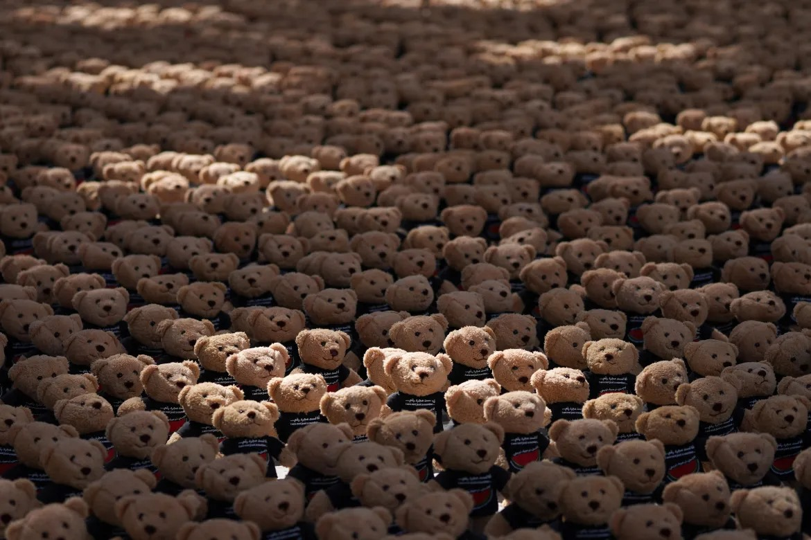

Curator's Note

This digital project was inspired by Bachir Mohammad’s “Echo of Lost Innocence” displayed in Qatar, a physical
installation of over 15,000 teddy bear sculptures to represent the children killed in Gaza since October 7th.
When he started his project, the number of lost children was already terrifyingly in the thousands, but the
figure today exceeds 15,0000 and continues to rise.
I myself have lost count of the children killed since I started creating “The Unplayed Teddy Bear Collection.”
I have long lost track of the daily videos and photos I’ve archived of children’s corpses, of children who are
sole survivors of entire slain families and generations, and of those crying to be pulled out from under
collapsed buildings.
Even now as I write this my phone buzzes with the latest reports.
I can’t imagine how many children lived their last moments trapped under rubble, and how many bodies still
remain
unfound in the wreckage... and in how many pieces their bodies are in.
Hind lived her last moments surrounded by the 6 corpses of her family members in their black Kia as they fled
to the South after IDF evacuation orders. The recording you heard was her 15-year old cousin Layan calling the
Red Cross/ Crescent for help before she was shot dead too. Hind survived and spent three hours on the phone
with the Palestinian Red
Crescent before they successfully negotiated with Israel for the safe entry of an ambulance to get her. They
never made it. Those two paramedics were killed also. You can read the forensics report here.

Choosing only 15 examples from my ever growing research was one of the most difficult
parts of this project, especially as massacres occur nearly daily, and trust me when I say I have already
selected images that are relatively less
gruesome.
Each teddy bear in this digital installation represents a child killed since October 7th; those without
faces
represent the unidentified children killed whose names I will never know, and most likely the Gaza Ministry
hasn’t identified, recorded down, or buried yet either. Amongst those with faces are also the 36 Israeli
children killed on October 7th.
Not included in the installation are the children killed by the Israeli Defense Forces (IDF) outside of
Gaza,
like 10-year
old Amr Najjar who was shot dead this March in the West Bank, or 12-year old Rami Al-Halhouli who was killed by Israeli police
in
a refugee camp in East Jerusalem. Then there are also the children killed before October 7th 2023 in the
Gaza
Strip who I have not gathered teddy bears for, like 3-year old Jamil Nijem who was killed by an IDF missile in August 2022 or 12-year old Mohammed al-Dura who was shot in September 2000 during the Jenin
Massacre. The IDF denies both responsibility for Mohammed’s death and a “massacre,” but they don’t refute
killing other children in their own report.
There are thousands more Palestinian children from this past year, and from the decades prior, whose stories
I can share with you, but
I'm afraid their deaths will simply just seem too far away. So far removed that my best way of grasping your
attention is with digital teddy bears.
I do not blame you for feeling distant. Even if your government, like
mine, is one of those directly funding Israel's genocide, I do not entirely fault you for feeling far
removed. But for most NYU students, we often have the privilege of knowing that our proximity to any country
in the world is simply a flight ticket.
So why are the beach clubs of
Tel Aviv not-so-distant, the campus of Abu Dhabi so accessible, but the plight of the Palestinian people
seemingly so foriegn and far away?
regardless of your political leanings, I hope
you can consider donating to support the humanitarian work of Singaporean activist Gilbert Goh (Paynow
87745281), who I have vetted and whose work on-the-ground I follow daily on Instagram @loveaidsg
you can reach out to me with your thoughts, concerns, and questions; while my creative coding
journey is
wrapping up, my own work as a researcher of geopolitical conflict remains far from over